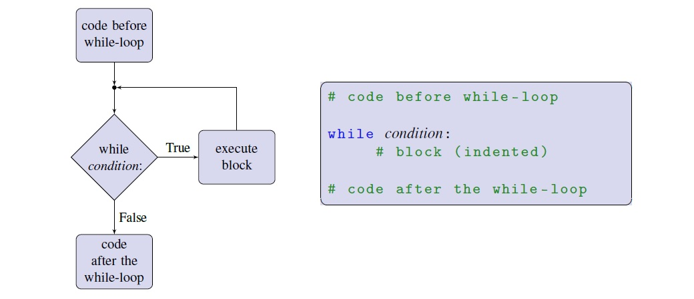
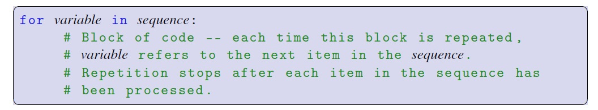
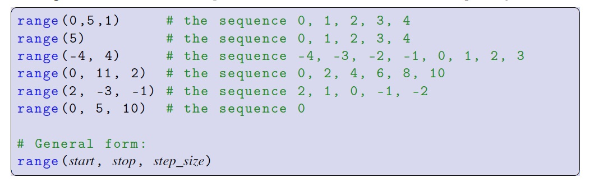
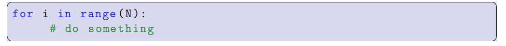
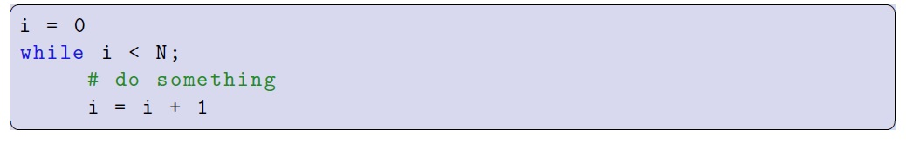

Very frequently in computer programming we would like to repeat certain actions. Sometimes we want to repeat these actions a specific number of times. Other times, we want to repeat some actions as long as some specified condition (i.e. Boolean expression) is True. Sometimes we’d like to repeat some actions for every element of data in some collection of data elements. In Python, we can do all of these things using loops.
While-loops work a lot like an if-statement in that they have very similar syntax — a condition followed by a block—but the block can be executed multiple times as long as the condition is True. While-loops consist of the word while, followed by a Boolean expression (the loop condition), followed by a colon, followed by a block of code.

Consider the following guessing game:
While loops can also be used to execute a block of code a pre-determined number of times. These are called counting loops because an integer variable is used to count the number of times the block has executed, and the loop condition is such that the condition is True as long as the loop has executed fewer than the required number of times. For example,
For the above example, i=i+1 has meaning because it's not a mathematical statement, but we are assigning a new value to i during each loop. We can also write it as a shortcut:
Both of the above example counts 1-5 before exiting the loop. Here's a another example that adds up the sum of the natural numbers:
Practice #1
Create a program that adds up the even numbers less than 20 using a while loop.
Once the statement in a while loop becomes False, we can have it execute another action using an else statement:
In Python, for-loops allow repetition of a block of code for each data item in a sequence. Right now we know about one kind of sequence: strings. For example:
In general, the syntax of a for-loop consists of the word for, followed by a variable name, followed by the word in, followed by a sequence, followed by a colon, followed by a block:

Practice #2
For the banana example above, add an exclamation mark after each letter.
We can use for-loops to create counting loops just like we did with while-loops. To do so, we first need to learn about a new kind of sequence called a range.
A range is a sequence of integers that begins at an integer a (the start), ends before an integer b (the stop), and in which the difference between each element in the sequence, called the step size, is equal. Ranges are created with Python’s built-in range function. The range function requires two arguments, start and stop, and can optionally accept a third argument for the step size which, if not given, defaults to 1. You may also provide just a single argument to range; range(x) is equivalent to range(0, x, 1), and is the sequence 0, 1, 2,...., x-1. Here are some example ranges:

Remember: the value stop is not part of the sequence.
Ranges can be used to write counting for-loops. Here is a for-loop that repeats its block exactly N times:

In this loop, i refers to the value 0 on the first repetition, 1 on the second repetition, and so on, up to N-1 on the last repetition. It is equivalent to the following while-loop:

Example: Create a sequence of numbers from 3 to 5, and print each item in the sequence
Example: Create a sequence of numbers from 3 to 19, but increment by 2 instead of 1
Consider the following example of adding up the even numbers less than 20:
Practice #3
Change the code so the number 20 is included.
Generally, for-loops are what you want to use to iterate over a sequence. Both for-loops and while-loops are appropriate for simple counting loops. You may prefer using for-loops with ranges for counting purposes because it requires less typing than the equivalent while-loop. For most other non-counting loops that have complicated loop conditions and/or don’t involve iterating over sequences, while-loops are likely the best choice.
Infinite loops are loops that repeat forever. A while-loop whose loop condition can never become False is an infinite loop. Here are a couple of examples: